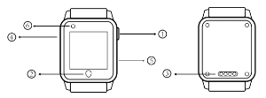
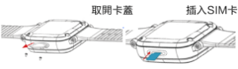

HT-790S兒童智能手錶使用手冊
按鍵及接口說明

① 多功能按鍵：開關機/SOS鍵、亮/熄屏鍵
關機狀態下，長按開機；
手錶開機後，手錶未能正常上線（包括未插入SIM卡、SIM卡無通信）時，長按開關機/SOS鍵時，手錶會關機；
手錶正常上線時，長按5s後，會啟動SOS報警功能；
開機狀態下，短按開關鍵為亮/熄屏功能。
② 返回鍵
③ 充電接口
④ SIM卡蓋
⑤ 手電筒
⑥ 攝像頭
綁定手錶
步驟一：裝卡說明-側插卡（自剪卡可能會導致手錶不能讀取SIM卡或損壞手錶）。如下示意圖，手錶關關機狀態下操作。打開手錶防水SIM蓋，就可以看到SIM卡槽。準備好NanoSIM卡，將卡全部推進SIM卡槽，將SIM卡蓋蓋上，並擰上螺絲，安裝完畢。

步驟二：開啟已下載APP，按照APP的指引註冊新的用戶或登錄已有帳號，成功登錄後選擇“兒童手錶”→選擇“HT-790S”
步驟三：選擇" HT-790S"後，請掃描手錶上的二維碼或手動輸入手錶的ID號進行綁定。
步驟四：綁定後即可通過APP對手錶進行相關的設置。
功能及使用說明介紹
1.電話本功能：手錶可設置15個電話本號碼，這15個號碼可與手錶進行互相撥號，雙向通話。電話本中的前3位默認為SOS緊急聯絡人。
2.SOS功能：手錶正常上線時，長按開關機/SOS鍵3s後，執行SOS報警功能，無人接聽時，手錶會循環兩輪撥打求救電話給3位緊急聯絡人；若3位緊急聯絡人任何一位接聽則停止循環撥打。由於香港的電話多配有留言信箱功能, 一旦手錶所撥打的電話無人接聽後進入了留言信箱, 會被手錶視為已經接聽了電話而停止重撥。
3.上課禁用：設置好上課禁用時間段後，手錶將會鎖住，可以防止小孩子在上課時玩手錶，同時，也能防止外來電話打擾上課。
4.找手錶：手錶不在身邊，發送該指令，手錶會響鈴一分鐘以方便尋找，按任意鍵停止響鈴。
5.通話功能：手錶進入電話本中，選擇聯絡人，即可撥打電話。
6.微聊功能：通過APP，可以給手錶發送文字或語音，同樣手錶可發送語音到APP。另外，通過手錶可以上傳圖片信息給到APP。
7.手錶鬧鐘：通過APP可以給手錶設置三組不同的提醒時間。
8.計步功能：可以記錄兒女當日運動步數等。
9.遠程關機：手錶開機正常工作後不能按鍵關機，只能通過APP遠程關機。
10.手錶時區和語言：在APP設置項選取「手錶時區和語言」，在語言項列表中選擇所需語言並提交即可。
11. 手錶還支持拍照、錄影，手電筒等功能。通過APP，您還可以對手錶進行課程表、手錶語言時區、計步、報警開關、定位、定位頻率、遠程監聽、鬧鐘、找手錶、遠程關機等設置和操作。
充電介紹
請使用設備配備的專用充電線，設備支持使用主流手機適配器進行充電，為支持環保，未隨機配置電源適配器，請選擇您身邊合適的適配器給設備充電即可。
充電說明圖示

配件
1.充電線
2.使用說明書
3.螺絲刀
常見問題
1.為什麼無法開機？
答：可能由於運輸時間過長，電池耗盡電量導致，請連接充電器充電後會自動開機。
2.為什麼無法為手錶充電？
答：請確認充電線是否與機身接觸良好。
3.為什麼二維碼掃描失敗？
答：請調整手機攝像頭與二維碼之間的距離，或者在光線充足的地方再重新掃描。
4.每一台追蹤手錶，是否只能供一個帳戶使用?
答：不是。第一個綁定追蹤手錶的帳戶稱為主帳戶，主帳戶最多可加入位三位成員（子帳戶）監察追蹤手錶。子帳戶需先於APP注冊帳戶，再由主帳戶於APP「成員管理」授權子帳戶。主帳戶負責操控、管理、通訊和監察追蹤手錶，子帳戶用作通訊和監察追蹤手錶，並沒有操控和管理功能。
5.插入SIM卡，設備正常上線使用時，無法通過手錶的開關機/SOS鍵關機？
答：手錶正常上線時，請通過APP進行關機；手錶未正常上線（包括未插入SIM卡或SIM卡無通信費）或當前通信信號很差時，才可通過手錶的開機/SOS鍵關機。
6.為什麽長按開機/SOS鍵時，手錶有時會關機？
答：手錶未正常上線（包括未插入SIM卡或SIM卡無通信費）或當前通信信號很差時，長按開關機/SOS鍵時，手錶會關機。
注意事項
1.請將產品遠離火源、高溫高熱等極端環境。
2.本說明書中的產品圖片只限用於操作指導，產品請以實物為準。
3.本公司在不斷升級和優化產品功能，如說明書所述內容與產品實際功能、規格或設計等略有不同，恕無法另行通知，敬請見諒。
售後服務
請諮詢當地的業務人員或者我司售後服務中心。
聯繫我們
有任何問題或建議，歡迎您隨時聯繫我們。
中國大陸
官方微信：航通守護者
客服QQ:3106893070
服務熱線：0755-8601 8738
中國香港
服務熱線：+852-26273380
郵箱：cs-liteguardian@castelbeidou.com
海外
郵箱: sales@castelbds.com
公司網頁:www.lite-guardian.com
服務熱線:+8675586018742